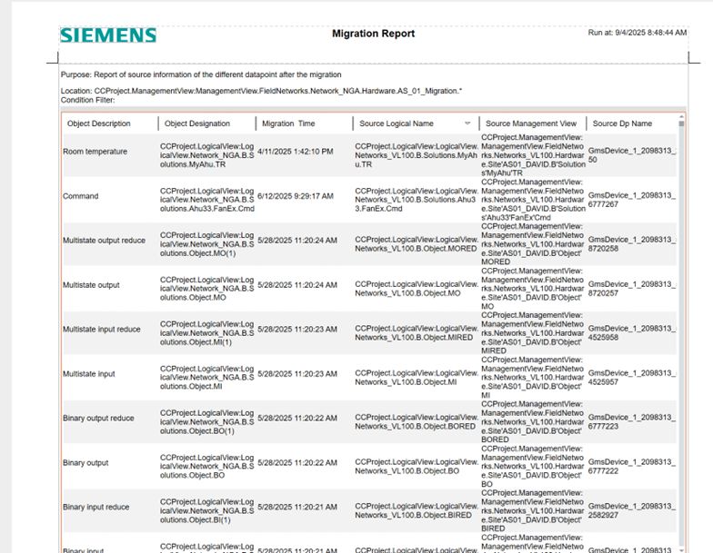

General Considerations
- If you need to inspect any object displayed in the migration tool, double-click on it to see a detailed view in the Object Configurator.
- After migration of a Managed Meter, refresh the Advanced Reporting cache to see the updated migration data.
- Script applications are not part of the migration process. If you want to migrate a script, perform the migration manually, and replace the source data with the new target.
- The Data Migration extension module contains a new reporting function with the results of the migration (location of the report: Reports.Status.HQ_MigrationInformation.xml). To run the report, drag and drop the object table from the migrated device. The report contains migration times and source information.
Example of a migration report:
